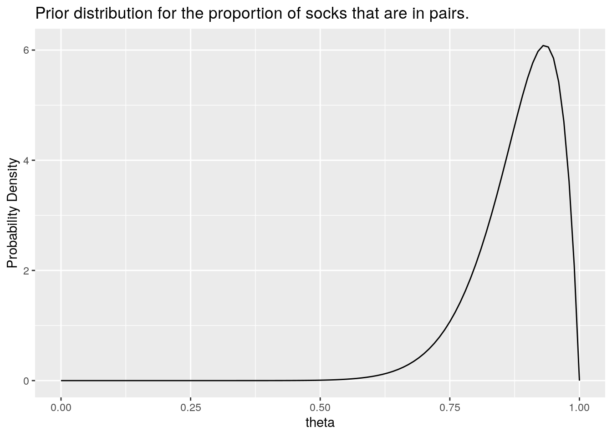
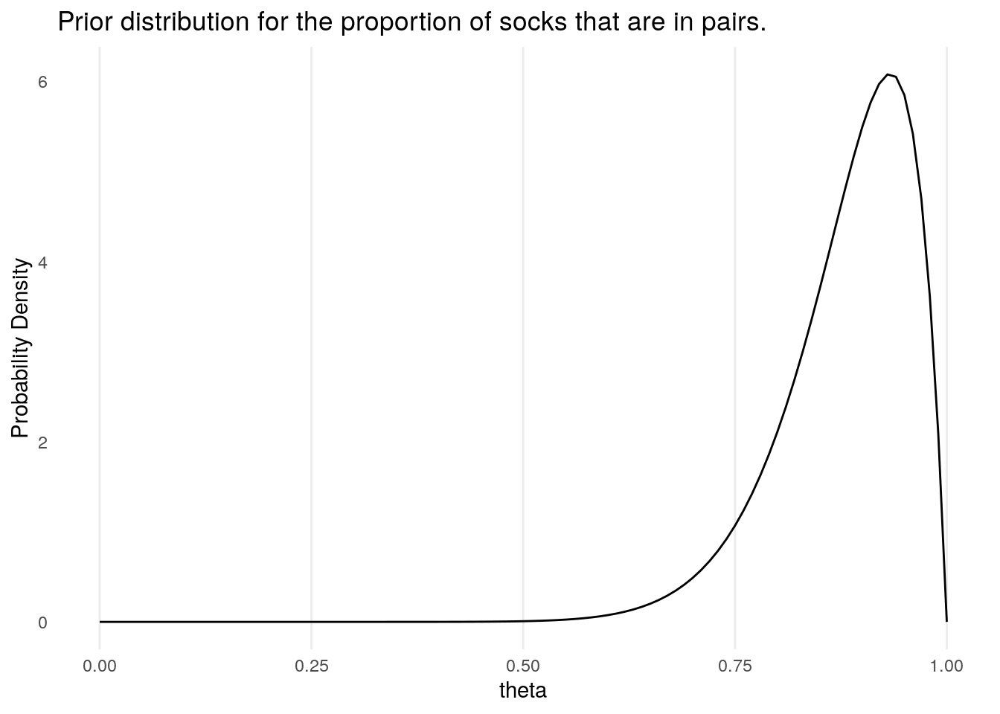
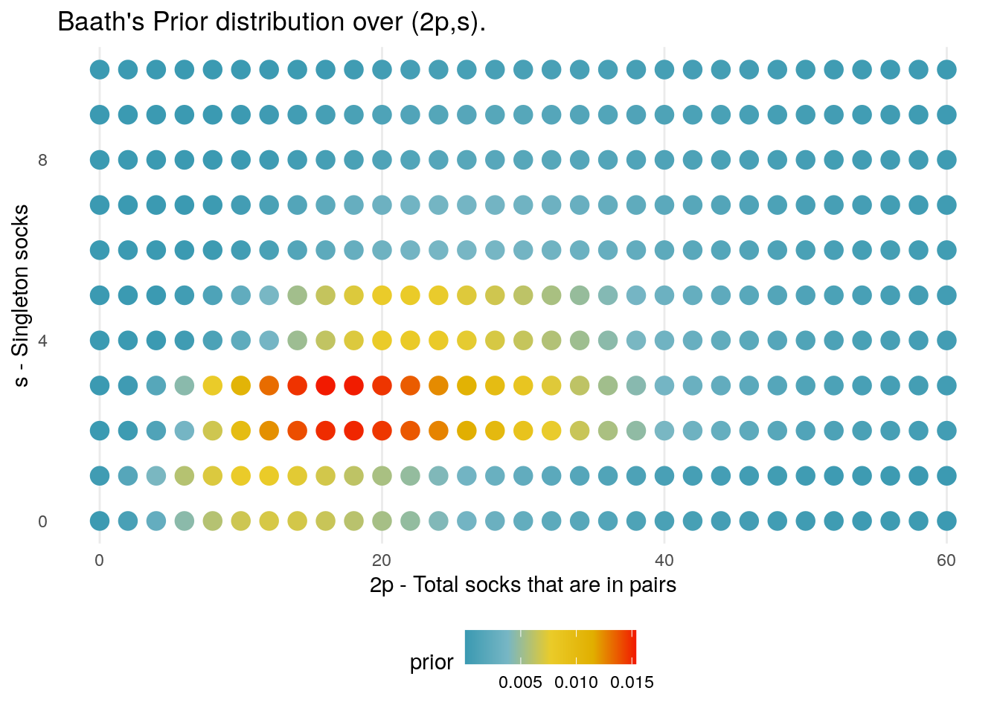

## ── Attaching packages ───────────────────────────────────────────────────────────────────────────── tidyverse 1.3.0 ──## ✓ tibble 3.0.1 ✓ stringr 1.4.0
## ✓ readr 1.3.1 ✓ forcats 0.5.0## ── Conflicts ──────────────────────────────────────────────────────────────────────────────── tidyverse_conflicts() ──
## x dplyr::filter() masks stats::filter()
## x kableExtra::group_rows() masks dplyr::group_rows()
## x dplyr::lag() masks stats::lag()socks_bayes <- function(p_max = 50, s_max = 50, k = 11, log_likelihood = NULL, log_prior = NULL){
if(is.null(log_prior)){
warning("Warning: Defaulting to the constant prior; this may yield an improper posterior.")
log_prior <- function(p,s){1}
log_prior <- Vectorize(log_prior)
}
socks <- crossing(data_frame(p = 0:p_max), data_frame(s = 0:s_max)) %>%
mutate(
n = 2*p + s,
k = k,
log_likelihood = log_likelihood(p,s,k),
log_prior = log_prior(p,s),
prior = exp(log_prior),
log_posterior_tilde = log_prior + log_likelihood,
log_posterior_tilde = log_posterior_tilde - max(log_posterior_tilde),
posterior_tilde = exp(log_posterior_tilde),
posterior = posterior_tilde / sum(posterior_tilde),
log_posterior = log(posterior)
)
socks <- socks %>% select(p,s,n,k, log_prior, log_likelihood, prior, log_posterior, posterior)
return(socks)
}Our first analysis will replicate that conducted by Baath, who constructs the prior on \((p,s)\) as follows.
First a prior is placed on \(n\), the overall total number of socks that are believed to be in the washing machine. He chooses to use a negative binomial distribution. Baath chooses parameters for this distribution based on prior knowledge that Broman is one in a family of four, and a belief that Broman only runs one wash per week, and as such decided to use a negative binomial distribution with mean \(\mu = 30\) (corresponding to 15 pairs of socks), with a standard deviation of \(\sigma = 15\); we denote this distribution by \(P_{\mu,\sigma}(n)\).
prior_n <- function(n, mu = 30, sigma = 15){
size <- -mu^2 / (mu - sigma^2)
prior_prob <- dnbinom(n, mu = mu, size = size)
return(prior_prob)
}## Warning: `data_frame()` is deprecated as of tibble 1.1.0.
## Please use `tibble()` instead.
## This warning is displayed once every 8 hours.
## Call `lifecycle::last_warnings()` to see where this warning was generated.
Having determined the total number of socks that he expects there to be in any given wash, Baath then uses a prior for the proportion of socks that are pairs, as opposed to singletons. Denoting this proportion \(\theta = 2p/(2p + s)\), Baath places on this a Beta prior (the natural choice for a proportion measure between 0 and 1). This has prior parameters \(\alpha\), \(\beta\) which are chosen to be \(\alpha = 15, \, \beta = 2\), which were chosen to conform with his own laundry habits. We will denote this distribution by \(P_{\alpha,\beta}(\theta)\).

We now have to work out how to turn priors on \(n\) and \(\theta\) into priors for \(p,s\); this is handled fairly easily in Baath’s original computation approach through a sampling process:
Without providing full details, following these steps mathematically leads to the following formula for the prior distribution of \((p,s)\)
\[ P(p,s) = P_{\mu,\sigma}(2p+s) \left\{ F_{\alpha,\beta}\left(\frac{2p +1}{2\lfloor p + s/2 \rfloor}\right) - F_{\alpha,\beta}\left(\frac{2p -1}{2\lfloor p + s/2 \rfloor}\right) \right\}, \] where \(F_{\alpha,\beta}(t) = P_{\alpha, \beta}(\theta \leq t)\) is the cummulative density of the Beta distribution; the term in braces corresponds to the probability that \(\theta\) lies in the range of values that when multiplied by \(2p + s\), and rounded to the nearest integer returns the answer of \(p\).
We define the prior below
log_prior_baath <- function(p,s, mu = 30, sigma = 15, alpha = 15, beta = 2){
if(min(alpha,beta) == 0 & s > 0){
return(-Inf)
}
n <- 2*p + s
prior_n <- prior_n(n, mu, sigma)
theta_hgh <- (2*p + 1)/(2 * floor(n/2) )
theta_low <- (2*p - 1)/(2 * floor(n/2) )
theta_hgh <- (theta_hgh %>% max(.,0)) %>% min(.,1)
theta_low <- (theta_low %>% max(.,0)) %>% min(.,1)
prior_theta <-pbeta(theta_hgh, shape1 = alpha, shape2 = beta) - pbeta(theta_low, shape1 = alpha, shape2 = beta)
return( log(prior_n) + log(prior_theta))
}
log_prior_baath <- Vectorize(log_prior_baath)The 2D density plot below shows how the prior distribution varies over combinations of (2p,s); the highest density goes to the scenario in which there are a total of 19 socks, made up of \(p = 8\) pairs and \(s = 3\) singletons. 
knitr::knit_exit()